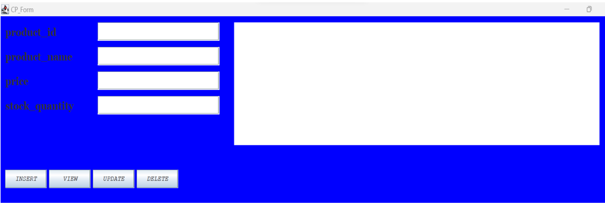
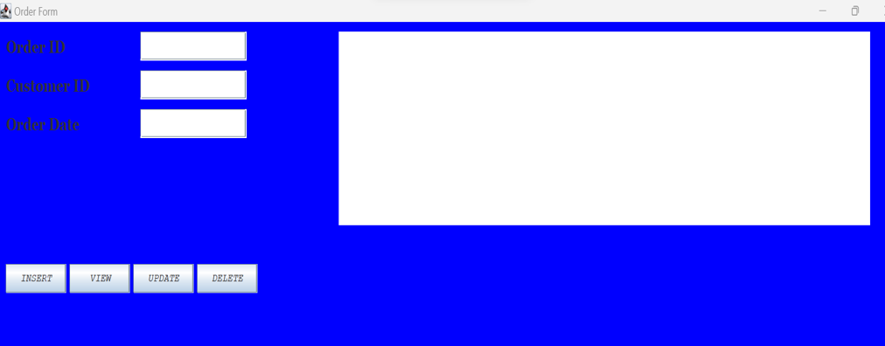

- DATABASE
Database name used: system_management_system.
- Tables
- Admin Table
- Product Table
- Supplier Table
- Stock Transaction Table
- Customer Table
- Orders Table
- Attributes
- Attributes of Admin Table Here are the descriptions or purposes of the attributes/columns used in Admin table:
fname, lname: The columns which are represents first name and last name of user.
phone: The column which are represents telephone number of user.
gender: The column which are represents or store gender of user like female and male.
martial_status: The column which are represents martial status of user like single,married,divorced,…..
DoB: The column which are represents Date of Birth of user.
Email: The column which are represents Email of given user.
Password: The column which are represents password of the user.
- Attributes of Product Table Here are the descriptions or purposes of the attributes/columns used in Product table:
Product_Id: The column which are represents id of product which is unique value called PRIMARY. It is set to auto-increment (AUTO_INCREMENT). AUTO_INCREMENT means that the database will automatically generate a unique ID for each new record, typically incrementing the previous value of Product table.
Product_Name: The column which are represents the name of the product like Prinnter.
Product_Description: The column which are represents the description or uses of the product.
Product_Price: The columns which are represents the price of the product.
- Attributes of Supplier Table Here are the descriptions or purposes of the attributes/columns used in Supplier table:
Supplier_Id: The column which are represents id of Supplier which is unique value called PRIMARY KEY. It is set to auto-increment (AUTO_INCREMENT). AUTO_INCREMENT means that the database will automatically generate a unique ID for each new record, typically incrementing the previous value of Supplier table.
Product_Id: The column which are represents id of product which is references to the product table value called FOREIGN KEY. It is a column of product table which has relationship between Supplier table.
Supplier_Name: The column which are represents the name of theSupplier like ABC Company.
Supplier_Address: The column which are represents Location or address of Supplier where workplace or organization are located.
Supplier_Contact: The column which are represents telephone number of Supplier.
Gender: The column which are represents gender of supplier like female and male.
- Attributes of Stock Transaction Table Here are the descriptions or purposes of the attributes/columns used in Stock_Transaction table:
Stock_Transaction_Id: The column which are represents id of Stock_Transaction which is unique value called PRIMARY KEY. It is set to auto-increment (AUTO_INCREMENT). AUTO_INCREMENT means that the database will automatically generate a unique ID for each new record, typically incrementing the previous value of Stock_Transaction table.
Product_Id: The column which are represents id of product which is references to the product table value called FOREIGN KEY. It is a column of product table which has relationship between Stock_Transaction table.
Transaction_Type: The column which are represents the name of the transaction per date or every day.
Quantity: The column which are represents the quantity of product for being transaction, may be it can purchase goods which has 45kg or 45.55.
Transaction_Date: The column which are represents the date of being transaction.
- Attributes of Customer Table Here are the descriptions or purposes of the attributes/columns used in Customer table:
Customer_Id: The column which are represents id of Customers which is unique value called PRIMARY KEY. It is set to auto-increment (AUTO_INCREMENT). AUTO_INCREMENT means that the database will automatically generate a unique ID for each new record, typically incrementing the previous value of Customers table.
Product_Id: The column which are represents id of product which is references to the product table value called FOREIGN KEY. It is a column of product table which has relationship between Customers table.
Name: The column which are represents the name of the customer.
Email: The column which are represents the email of customer.
Phone_Number: The column which are represents telephone number of customer.
Gender: The column which are represents sex of customer like female and male.
- Attributes of Orders Table
Order_Id: The column which are represents id of Customers which is unique value called PRIMARY KEY. It is set to auto-increment (AUTO_INCREMENT). AUTO_INCREMENT means that the database will automatically generate a unique ID for each new record, typically incrementing the previous value of Orders table.
Customer_Id: The column which are represents id of product which is references to the Customers table value called FOREIGN KEY. It is a column of Customers table which has relationship between Orders table.
Order_Date: The column which are represents the date of being orders of customer.
Total_Amount: The column which are represents the amount of money paid by customer about ordering.
Order_Status: The column which are represents the status of orders, they can be pending,processing, shipped, etc.
Admin table database structure This is table is table that will be only created by admin and will hold other system users apart from admin will give them email and password that they will use to login and access the project or system, and also t used to register if she/he’s don’t have an account so once you must to create account in order to login and access or use the system. Note: the created Admin will not have same ability and right in the system.
Product Table database structure This table stores information about each product in the inventory such as product ID, name, product description, price, quantity on hand, etc. It serves as a central repository for all product-related data.
Supplier Table database structure This table Stores details or information about the suppliers providing the products, including supplier ID, name, contact information, etc. This table helps in managing relationships with suppliers and tracking supplier performance.
Stock_Transaction Table database structure This table Tracks all transactions related to inventory management, including sales, purchases, transfers between locations, adjustments, etc. It includes fields like transaction ID, type, date, product ID, quantity, and involved parties (if applicable).
Customers Table database structure This table Stores information about customers who purchase products, including customer ID, name, contact details, etc. This table facilitates managing customer relationships and analyzing customer behavior.
Orders Table database structure This table Stores details about customers orders placed by the company or organization to customers or may customers can provide orders for what he/she wants to purchase, including order ID, customer ID, order date, total amount, order status etc.It helps in tracking and managing the procurement process.
- JAVA PROGRAMMING
- Description
Eclipse IDE: an integrated development environment used in computer programming. It contains a base workspace and an extensible plug-in system for customizing the environment. It is the second-most-popular IDE for Java development, and was the most popular.
JAR stands for Java Archive: It's a file format based on the popular ZIP file format and is used for aggregating many files into one. Although JAR can be used as a general archiving tool, the primary motivation for its development was so that Java applets and their requisite components.
- Forms and Images
Product Form
Supplier Form

Stock Transaction Form

Customer Form

Order Form

IntroductionIn this chapter I will be describing how powerful generalpurpose programming language was used to create the analyzed system. Under this chapter I will undergo full detail of how everything will function together with database that have been describe above and how it cope with full analyzed system.
Tools used to develop this system in java programming

MySQL Connectors: MySQL provides standards-based drivers for JDBC, ODBC, and .Net enabling developers to build database applications in their language.